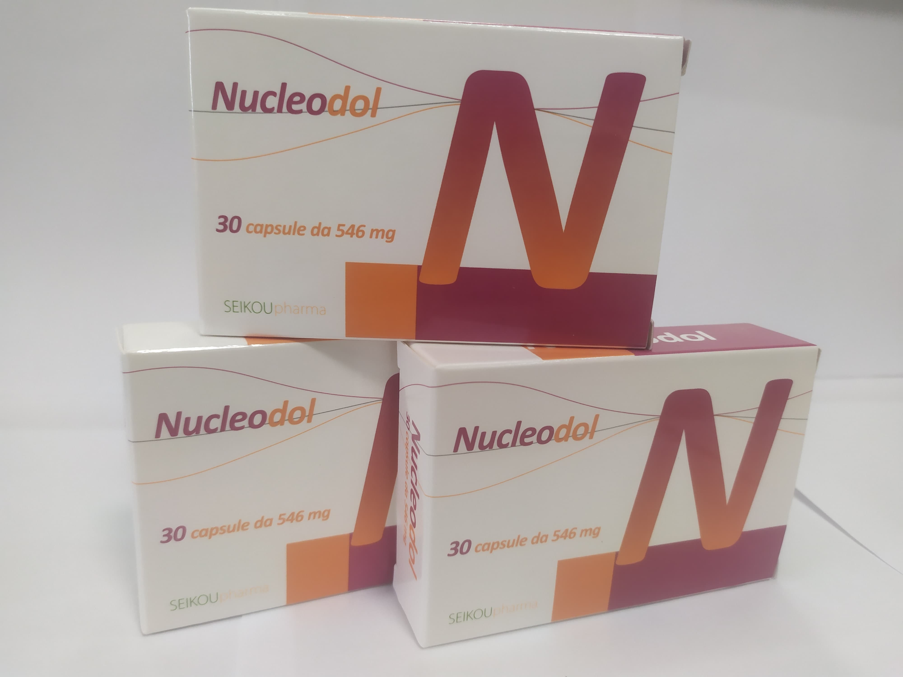

Контактная информация:
Цена: 1200 грн/уп.
в наличии
Производитель: Италия
Цена: 1200 грн/уп.
в наличии
Именно в FarmItal вы можете купить капсулы Nucleodol, нуклеодол в Украине, Гарантированно Качественный!
Доставка Nucleodol осуществляется транспортными компаниями, сроки выполнения заказа оговариваются менеджером Фармитал. Вы можете заказать Нуклеодол капсулы в городах: Одесса, Херсон, Чернигов, Северодонецк, Бердянск, Бровары, Днепр, Винница, Киев, Славянск, Полтава, Краматорск, Белая Церковь, Каменское, Мариуполь, Черновцы, Александрия, Каменец -Подольский, Львов, Запорожье, Кропивницкий, Житомир, Ивано-Франковск, Сумы, Черкассы, Константиновка, Мелитополь, Кривой Рог, Ровно, Луцк, Никополь, Павлоград, Ужгород, Кременчуг, Лисичанск, Хмельницкий, Тернополь, Харьков, Николаев, а также в других населённых пунктах Украины.
Капсулы – 30 капсул по 546 мг
В результате исследования специфических потребностей при заболеваниях периферической нервной системы лаборатории Fisiopharma разработали Nucleodol, продукт с эксклюзивной формулой, поскольку на рынке нет другой пищевой добавки, содержащей такие же компоненты.
Сочетание в одном продукте различных направлений действия, которые могут больше способствовать изменениям периферической нервной системы от нутрицевтика:
Нуклеотиды CMP + уридин: компоненты, традиционно связанные с восстановлением и созреванием аксонов нервной ткани, поскольку они способствуют регенерации миелиновой оболочки, улучшают проводимость нервных импульсов и трофику мышц.
α-липоевая кислота + L – карнитин: эта комбинация связана с уменьшением содержания вещества Р в периферических нервах и с поглощением свободных радикалов для защиты нервных клеток от перекисного окисления. Они обладают антиоксидантным питательным действием со способностью преодолевать гематоэнцефалический барьер. Содействие воспалительным и болевым процессам, характеризующим определенные процессы периферической нейропатии. Так как они оказывают противовоспалительное и болеутоляющее действие. Они улучшают болевые параметры и увеличивают скорость прохождения нервного импульса.
Комплекс витаминов B+фолиевая кислота+цинк: Эти питательные вещества необходимы в процессе восстановления процессов, связанных с периферическими невропатиями. Несколько исследований связывают недостаток этих витаминов с усилением симптомов этой хронической патологии.
Лечение и терапия различных форм невропатий.
Каждые 2 капсулы Nucleodol содержат следующие активные ингредиенты:
Нуклеодол подходит для диабетиков, целиакии и непереносимости лактозы
Хранить в недоступном для детей месте. Не требует особых условий хранения.